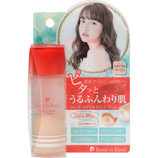

返回列表
产品名称：ロン・エ・ロン ウォーターカクテルファンデーション ミディアムベージュ

＿ ロン・エ・ロン ウォーターカクテルファンデーション ミディアムベージュ ２８ｍｌ
メーカー ＿
JANコード 4589975540699
商品の特徴
オイル成分大幅カット。
２層式リキッドファンデ。
- 成分・分量
- 水、ＢＧ、エタノール、グリセリン、グリセリルグルコシド、ＰＣＡ－Ｎａ、ソルビトール、オレンジフラワー水、グルコノバクター/ハチミツ発酵液、リン酸アスコルビルＭｇ、アーチチョーク葉エキス、アカツメクサ花エキス、アセンヤクエキス、ヒアルロン酸Ｎａ、アセチルテトラペプチド－３、ジラウロイルグルタミン酸リシンＮａ、クエン酸Ｎａ、クエン酸、ペンタイソステアリン酸ポリグリセリル－１０、トリ（カプリル酸/カプリン酸）グリセリル、メトキシケイヒ酸エチルヘキシル、（スチレン/ＤＶＢ）クロスポリマー、（ジメチコン/ビニルジメチコン）クロスポリマー、プルラン、ミリストイルプルラン、シリカ、デキストラン、フェノキシエタノール、（＋/－）酸化チタン、カオリン、酸化鉄、水酸化Ａｌ
- 用法及び用量
- 化粧水でお肌を整えたあと、化粧下地を伸ばしてください。
キャップをしめた状態で良く振って頂き、手のくぼみに５～７滴程乗せ、均一に伸ばしてください。